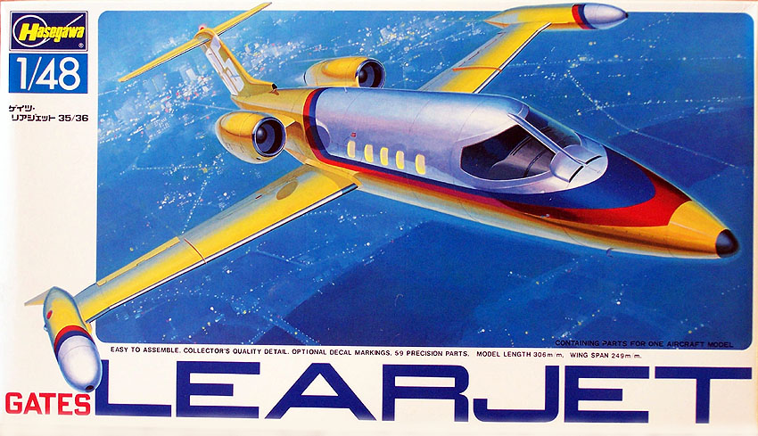
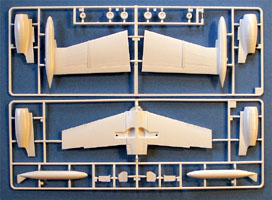
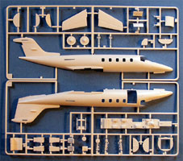
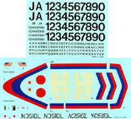

{kind=link}
{kind=link}
{kind=link}
{kind=link}


Hasegawa 1/48 Gates Learjet 35/36

Kit #T003-1800
Collector�s Market Value $11.50
Images and text Copyright � 2006 by Matt Swan
Developmental Background
Swiss American Aviation Company developed a small corporate jet based on the FFA P-16 Swiss made fighter jet. The tail and wings were retained and the fuselage was replaced with a small passenger fuselage capable of comfortably handling six passengers and three crew members. This borrowed design allowed them to considerably reduce developmental costs and keep end prices affordable. The prototype first flew on October 7, 1963. A few modifications were implemented at this time like moving the horizontal tail to the top of the stabilizing fin, increasing the sweep of the wing a few degrees and renaming the company to Lear Jet Industries. The modified design went into production as the Lear 23 and became a pioneer in the entirely new field of business and personal jet aviation.
In 1967 nearly 60% of Lear Jet Industries was acquired by Gates Rubber Company and in 1970 the company name was changed to Gates Learjet Corporation. The model 23 jet was redesigned around this time with the fuselage and wingspan being stretched and redesignated the model 35/36. This model featured improved engines that increased the top end cruising speed, reduced fuel consumption and thus increased range. The model 35 was slightly more cramped inside with eight passenger seats while the model 36 was more comfortable being designed to handle only six passengers. FAA approval was granted in 1974 for both versions and production began in earnest. More than 800 Learjets of this model were produced from 1974 to 1977 when the type was redesigned once again as the Learjet 54-56 with increased seating now to ten and with further improved engines.
Most Learjets have been sold within the United States and see service not only in the private sector but are also used by the military as small personnel transports. They made small passenger jets affordable for corporations and some private individuals and opened an entirely new market that has been populated by several manufactures of small business jets.
The Kit


This kit is an older release from the days when raised panel lines were the industry standard and that is exactly what we see here. You may click on the small images to the right in order to view larger pictures. All exterior body pieces display finely raised panel lines and recessed flight control definition. The four sprues of parts are all done in white high pressure injection molded polystyrene and are of a quality one would expect from Hasegawa. The parts surfaces are nicely smooth and free of imperfections, no flash is evident on any pieces, no sink holes can be found and there do not appear to be any serious injector pin markings inside any pieces.
This kit includes a complete interior with six passenger seats, detailed cockpit including a dash with raised instrument details and an open crew door which you�ll really need to be able to check out the interior. I say this because the small sprue of clear parts is indeed nicely clear they are all smoke tinted as would be those on the actual aircraft. We have four clear parts on the sprue with three of those being inserts from the interior for the passenger windows and the last being the main canopy. The main canopy piece shows very fine raised frame lines and includes the inlets for the pressurization system. During a test fit of the main pieces everything fit as well as one would expect from this manufacture � in other words all panel lines met up properly and little if any filler will be needed which is a good thing for any kit featuring raised panel lines.
Taking an inventory of the kit we have fifty five pieces done in white polystyrene and four pieces in smokes clear plastic for a grand total of fifty nine pieces in the box.
Decals and Instructions
Instructions for this kit come as a large, three panel fold-out that begins with a very nice and complete historical background on the aircraft type in both English and Japanese. Also on this side of the sheet is a panel devoted to a parts map and exterior painting and decal placement instructions for two aircraft. On the flip side the three panels there consist of six exploded view construction steps. While we do not get a paint chart per se we do get plenty of color call-outs through these exploded views that do list painting by color name and by Gunze Mr. Color codes. Considering the wide variety of customers for this aircraft and the money most of them had available for customization the modeler should feel free to change these colors if so desired.

The kit comes with two sheets of decals. The primary sheet includes all the basic markings for the craft shown in the box art along with a second shown in the instructions. These decals display good print registry and excellent color density and are quite vibrant. The decals do appear to be slightly on the thick side and may require some serious applications of decal setting solutions. Also included on this sheet are a few national marking for aircraft in Japanese use. The second sheet consists of dual alphabet and numeric listings that should, in conjunction with the extras on the main sheet, allow the modeler to replicate many different aircraft. By the way, you can click on the small decal image to view a larger picture of the kit markings.
Conclusions
There are several kits of the Gates Learjet on the market, this one which has also been released under the Minicraft logo, a kit from Testors and an old one from ICM. There is also a release of the Learjet under the Revell logo and that is from the Hasegawa molds also. As for the Hasegawa kit it is well engineered with good fit and good looks. The raised panel lines should not present much of any problem as a craft of this type would have been kept in nearly immaculate condition and the panel lines would have been nearly invisible. There is nothing on the aftermarket for the kit which is a shame � I would like to have seen alternative markings and possible an engine kit as an accessory for maybe a hanger diorama.
It�s not a war era aircraft and it doesn�t even have a propeller but it certainly is a good looking aircraft and filled an important role in aviation history and as pointed out by one of my modeling buddies with all the extra numbers and letters you could model your own personal Learjet -- hmmm, the Swanny's Models Learjet. I give it a good recommendation and think it makes a great counterpoint piece for any aircraft collection.